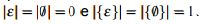

Linguagem Formal
Uma linguagem formal é um conjunto, finito ou infinito, de cadeias de comprimento finito, formadas pela concatenação de elementos de um alfabeto finito e não-vazio. Além das operações previamente definidas para conjuntos, como união, diferença, intersecção etc., outras operações, tais como a concatenação e os fechamentos, também são fundamentais para a definição e o estudo das linguagens formais.
Convém notar a distinção que há entre os seguintes conceitos:
* cadeia vazia ε;
* conjunto vazio 0;
* conjunto que contém apenas a cadeia vazia {ε};
* I conjunto que contém apenas o conjunto vazio {/0};
O primeiro deles, ε, denota a cadeia vazia, ou seja, uma cadeia de comprimento zero, ao passo que os demais são casos particulares de conjuntos:
/0 denota uma linguagem vazia, ou seja, uma linguagem que não contém nenhuma cadeia, {ε} denota uma linguagem que contém uma única cadeia (a cadeia vazia), e {/0} denota um conjunto que contém um único elemento, o conjunto vazio. Observe-se que
